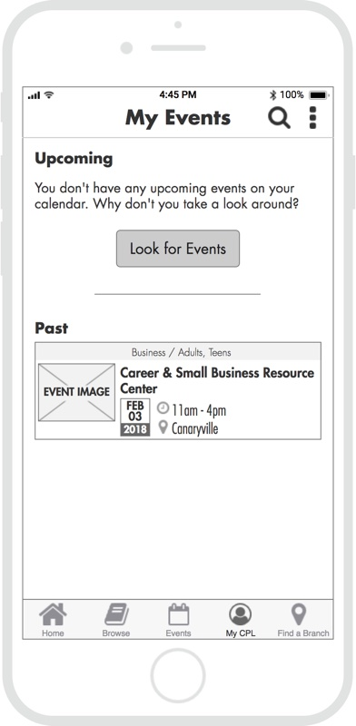
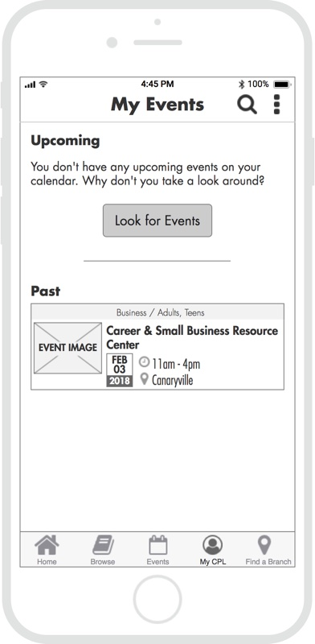

Chicago Public Library
A six-week project designing a community-focused mobile app for Chicago Public Library
Team: 3-person UX team
Skills: UX Design, Information Architecture
Tools: Sketch, Axure, InVision, Optimal Sort
Working on the Chicago Public Library would be my first opportunity to work on a design project in the context of an already existing organization. It was also my first experience working on a UX team, and I looked forward to have multiple perspectives at the table as we worked to understand the problem and the process.
PROJECT OVERVIEW
Even in digital age, libraries have an increasingly important role as access-provider to a wide variety of activities, resources, and educational programming. Our team was tasked with the research and development of a digital product that helps the Chicago Public Library best serve its patrons as a community hub.
A LOOK AT THE COMPETITION
We examined and compared five library systems from major metropolitan areas in the US and Canada, as well as three other organizations that provide access to educational resources and facilitate community-based gatherings. We analyzed each organization’s stated purpose, audience, services, and digital offerings and developed a few key insights:
- Like their competitors, CPL had a lot to offer in terms of programming and resources, but it was difficult to sift through the 3000+ upcoming events.
- Events and programming were not easy to browse and not promoted in a targeted fashion.
- The CPL native app lagged behind direct competitors in terms of functionality, only featuring a catalog and location search.
I took the findings from the competitive analysis and summarized them in the brief below.
USER INSIGHTS
We conducted seven user interviews, each generally lasting from 45 minutes to an hour. The interviewees were all Chicago residents ranging in age from 25 to 44 years old. We pulled key insights from the interviews,created an affinity diagram to identify themes and patterns, and then synthesized our findings into personas and journey maps. The persona and journey map I developed and designed are displayed below.
Persona
Customer Journey Map
THE PROBLEM
Research, including user and SME interviews and survey responses, showed people value the events the library offers but are not well informed. With the world increasingly accessing the Internet primarily through mobile devices, we felt Chicago Public Library should commit to facilitating event engagement through their mobile platform. Feeling like we had a grasp of where our users were coming from, we wrote a problem statement to clearly define the problem we were going to solve:
Chicago library patrons who engage with the library via mobile need a more consistent and effective way to learn about library events because they deserve to be aware of the programming that Chicago Public Library offers.
Design Principles
- Consolidate - Provide users the information they need in one place.
- Personalize - The library serves a wide range of interests, and the product should adapt to the individual with each use.
- Inclusive - The product needs to be understandable to a wide range of users from different demographics and backgrounds.
- Approachable - The design needs to be friendly and create a welcoming digital space for our users.
WIREFRAME SKETCHES AND PAPER PROTOTYPE
I did a series of rough 6-8-5 sketches to help generate ideas for possible solutions and shared them with my teammates for feedback. After iterating and refinement, I created a paper prototype for initial concept testing that you can see and interact with below.
APP MAP
In an effort to organize the event search more effectively, we conducted an open card sort to better understand users’ mental models around existing library event types. We integrated this information into the app map I designed, while restructuring the app’s architecture to include native event search functionality.

WIREFRAMES
I designed a set of wireframes that utilized a launchpad-style home screen and focused on the event search and filter process. These screens were then integrated into an Axure prototype for usability testing.
 

Take a look at the Axure prototype.
CONVERGED PROTOTYPE
Taking what we learned from our first round of testing, I converged our three individual prototypes into one unified version that included an onboarding process, a more dynamic and informative home screen, and refined event search capability.